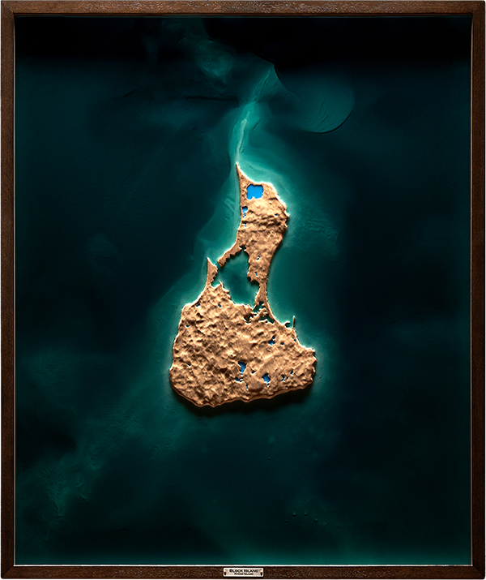
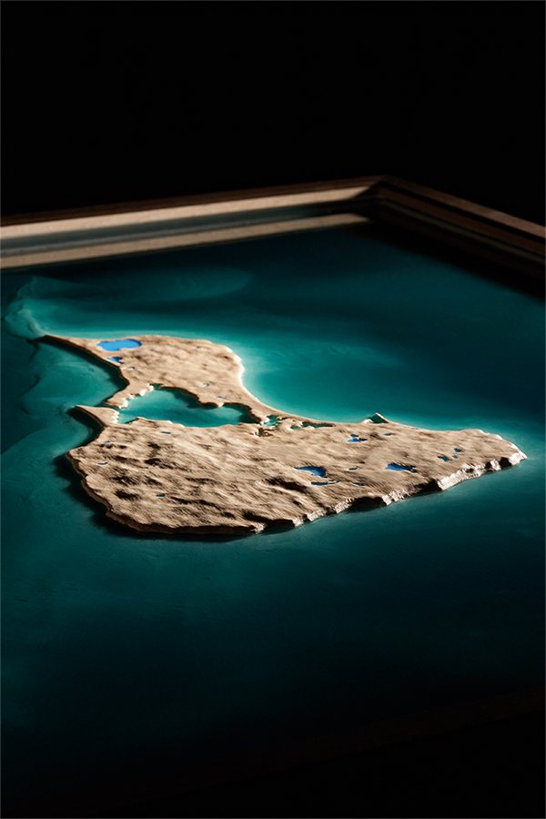
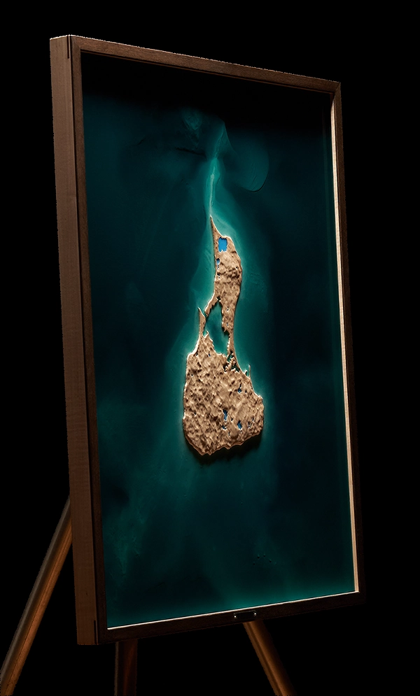

Block Island
Rhode Island
Relief of Block Island, a glacial island set between Rhode Island Sound and the open Atlantic, carved in maple and framed in mahogany. The wood defines the island’s compact interior, clay bluffs, and coastal edge. Translucent resin carries the bathymetry outward, revealing the northern ebb shoal and the continental shelf falling away to the south.
Shaping of Place
Block Island was shaped by glacial deposits, coastal erosion, wind, and Atlantic water. Its rugged interior, clay bluffs, and low coastal forms belong to a landscape made from sand, gravel, clay, and other material in motion. The island's form comes from accumulated drift later shaped by rising seas, shoreline movement, and repeated erosion.
That movement is most visible offshore, where shoals, channels, and shelf contours extend the island's form into the surrounding water. To the north, the ebb shoal gives Block Island its strongest bathymetric presence, marking the exchange between island, tide, and sound. Along the southern coast, clay, sand, and gravel continue to shift at the bluffs, feeding beaches and reshaping the island's edge over time.

Block Island relief, full composition.

Southern bluffs and coastal edge.

Installed relief, angled view.
This piece began with a wedding at Block Island's southern Mohegan Bluffs, where clay cliffs drop sharply toward the Atlantic. For the couple, the island is a place of return, shaped by bicycle rides between harbors, familiar roads, and ten square miles that continue to feel vast.
The carving uses vertical exaggeration to give the island's modest terrain its emotional scale. The southern bluffs receive special emphasis in the relief as the place where the story gathers weight.
The resin was mixed toward the color of coastal summer water, when the island feels most alive. The composition was framed to include a broad field of ocean, allowing the island to retain its independence, distance, and quiet remove.
Artist's Note